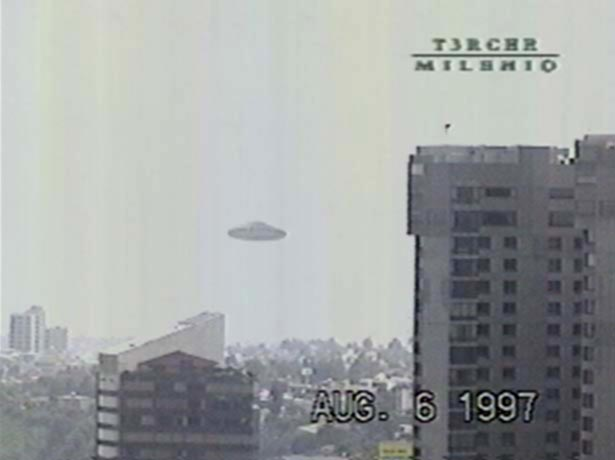
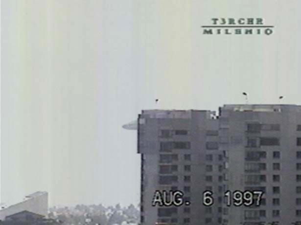
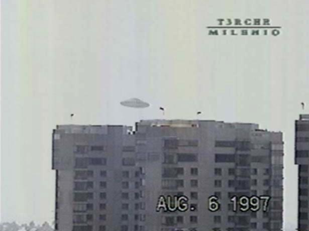

La video de Mexico
1ʳᵉ émission
Début de la séquence difusée dans Tercer Milenio : l'ovni oscille tout en restant stationnaire

, le présentateur TV Jaime Maussán annonce dans
son émission dominicale T3rcer Milenio ("3ᵉ millénaire" sur Televisa) détenir un film d'ovni plus que spectaculaire. Il aurait reçu la video le vendredi 26,
accompagnée d'une lettre, qu'il lit à l'antenne. L'expéditeur tient à conserver son anonymat : il déclare craindre
de perdre son travail, la video ayant été prise avec un ami pendant des heures de travail (une pause déjeûner)
depuis le sommet l'immeuble où se situe son bureau.
Il diffuse ensuite la video de . L'affichage indique qu'elle aurait été prise le 6 août. On voit
d'abord un paysage global, puis un zoom sur ce qui se révèle être sans équivoque une soucoupe grisâtre, oscillante,
mais stationnaire, puis avançant lentement, toujours oscillante, dans un ciel quelque peu brumeux, passant derrière
les immeubles des environs de Mexico. En fond sonore, on entend les voix de 2 hommes, parlant en espagnol,
apparemment très excités, ne refreignant pas leur langage, même grossier.
Maussán déclare avoir analysé la video en testant divers "modes
d'affichage" sur ordinateur et en zoomant sur l'image. La bande qu'a reçu Maussán est une copie, et a les caractéristiques d'un film pris par une caméra
numérique. Pour lui, il est probable que la video soit authentique.
2ᵉ émission
La soucoupe passe derrière l'immeuble

Dans son émission suivante, , Maussán
présente la suite de son enquête : il s'est rendu sur les lieux de l'observation (la zone de Lomas Chapultepec dans
le quartier de Tecamalchaco, à 6 miles du centre de la ville), et, après un porte-à-porte dans le quartier, a pu
trouver plusieurs témoins corroborant l'événement : 5 adultes et 4 adolescents (on citera le nombre de 100, mais il
s'agit certainement d'une évaluation de témoins potentiels). Parmi ces derniers, une jeune fille de 14 ans,
vendeuse de tacos dans la rue. Elle raconte avoir vu la soucoupe ce jour-là depuis la rue, qui lui parût si grande
qu'elle en fut effrayée et courrut se réfugier chez elle, où elle fit face à l'incrédulité de son père. D'après
Maussán et son collaborateur Lee Elders, la fille a décrit
parfaitement la séquence, avant même qu'ils ne lui montrent la video, dont elle ignorait l'existence. Est-ce que
je peux faire entrer mon père ? Maintenant, il ne dira plus que je suis folle
, dira-t-elle. Une autre femme,
adulte, déclare avoir vu directement la chose au-dessus d'elle. D'autres témoignages sont moins convaincants, voire
contradictoire, un prétendu témoin déclarant avoir vu l'ovni la nuit.
Maussán qualifie la video de preuve suprême
de l'existence
des ovnis, qu'il s'agit de la meilleure video jamais prise d'un ovni (qualificatif qu'il attribuera aussi plus tard
à la video de Campeche), et déclare qu'il va poursuivre son enquête.
Suspicions
L'ovni ressort de derrière l'immeuble

Graham W. Birdsall fait remarquer que la séquence d'oscillation est
toujours la même, que l'objet est toujours étonnamment net, que le caméraman semble anticiper le mouvement de
l'objet, qu'il ne dézoome pas ni ne cherche de droite à gauche lorsque l'objet disparaît derrière un immeuble.
Michael Hesemann déclare que ses amis travaillant à la tour de l'Aéroport
International (Benito Juarez) de la Ville de Mexico
lui auraient dit que l'ovni n'avait pas été
détecté sur radar au moment en question.
Il s'étonne aussi que Daniel Munoz
(assistant de Maussán) ne soit pas parvenu à recueillir le
témoignage de personnes habitant l'immeuble vu à côté de l'ovni (Munoz dira que cela était très difficile en raison
de la grande sécurité installée dans cette zone résidentielle) ou que la presse n'en a pas parlé dans les jours qui
suivirent l'observation.
Bruce Maccabee consacre à son tour un effort non négligeable à analyser la video.
D'abord impressionné, il s'aperçoit finalement avec Jeff Sainio que lorsque les images des immeubles sont troublées
par le mouvement de la caméra, celles de l'ovni ne le sont pas. Tous deux constatent aussi des incohérences dans les
mouvements attendus de l'ovni lorsque l'image tremble en raison du mouvement aléatoire des mains du cadreur. Un faux
comparable est créé pour une émission de Bob Kiviat.
Le film est aujourd'hui considéré comme un canular sophistiqué par la plupart des
ufologues l'ayant analysé.